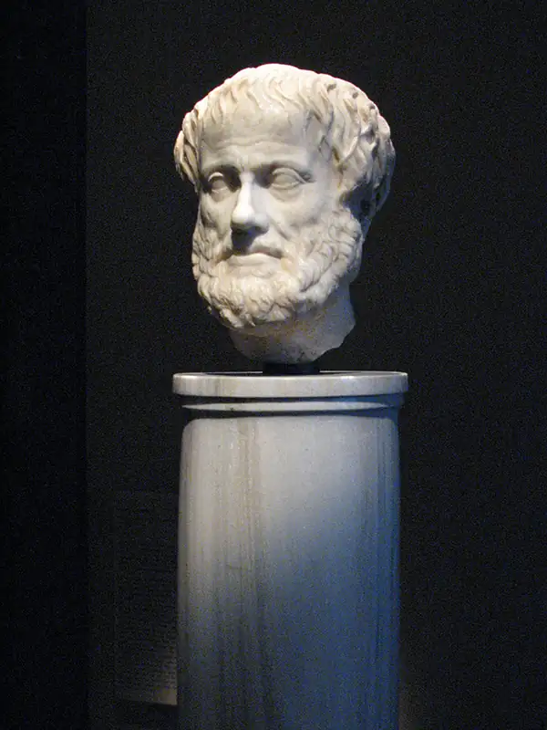
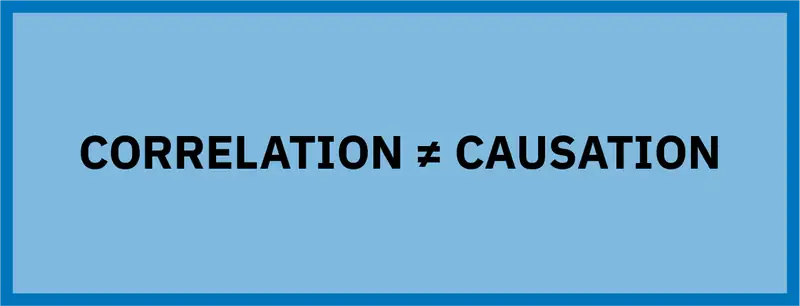

Chapter 5: Logic and Reasoning¶
Introduction¶
Within the philosopher’s toolkit, logic is arguably the most powerful tool, and certainly it gets the most use. Logic, the study of reasoning, aims to formalize and describe reasoning processes used to arrive at claims. Logic is a study of both how we do reason and how we ought to reason. Logicians categorize and explain different forms of successful reasoning along with mistakes in reasoning, with the goal of understanding what to do right and what to avoid. This chapter seeks to provide you with a general understanding of the discipline of logic.
5.1 Philosophical Methods for Discovering Truth¶
Learning Objectives
By the end of this section, you will be able to:
- Describe the role that dialectics plays in logic and reasoning.
- Define “argument” and “negation of a argument.”
- Define the laws of noncontradiction and the excluded middle.
Like most academic disciplines, the goal of philosophy is to get closer to the truth. Logic, reasoning, and argumentation are the predominant methods used. But unlike many other disciplines, philosophy does not contain a large body of accepted truths or canonical knowledge. Indeed, philosophy is often known for its uncertainty because it focuses on questions for which we do not yet have ways of definitively answering. The influential 20th-century philosopher Bertrand Russell explains that “as soon as definite knowledge concerning any subject becomes possible, the subject ceases to be called philosophy, and becomes a separate science” (1912, 240).
Because philosophy focuses on questions we do not yet have ways of definitively answering, it is as much a method of thinking as it is a body of knowledge. And logic is central to this method. Thinking like a philosopher involves thinking critically about alternative possibilities. To answer the question of whether there is a God (a question for which we lack a definitive method of answering), we can look at things we believe we know and then critically work through what those ideas entail about the existence or possible characteristics of God. We can also imagine God exists or God does not exist and then reason through what either possibility implies about the world. In imagining alternative possibilities, we must critically work through what each possibility must entail. Changing one belief can set off a cascade of implications for further beliefs, altering much of what we accept as true. And so, in studying philosophy, we need to get used to the possibility that our beliefs could be wrong. We use reason to do philosophy, and logic is the study of reason. Hence, logic helps us get closer to the truth.
Dialectics and Philosophical Argumentation¶
Philosophers love to argue. But this love does not mean that philosophy lectures are loud, contentious events. Most people think of an argument as a verbal disagreement, and the term evokes images of raised voices, heightened emotions, and possibly bad behavior. However, in philosophy, this word does not have a negative connotation. An argument in philosophy is a reasoned position—to argue is simply to offer a set of reasons in support of some conclusion. The goal of an individual argument is to support a conclusion. However, the long-term goal of argumentation between philosophers is to get closer to the truth. In contemporary academic philosophy, philosophers are engaged in dialogue with each other where they offer arguments in the publication of articles. Philosophers also engage in argument at conferences and in paper presentations and lectures. In this way, contemporary academic philosophers are engaged in a dialectic of sorts.
A traditional dialectic is a debate or discussion between at least two people who hold differing views. But unlike debate, participants in the discussion do not have the goal of “winning,” or proving that the other view is wrong. Rather, the goal is to get closer to the truth. Thus, dialectics make use of logic and reason, while debates often use rhetorical ploys or appeal to the emotions. Because of the tendency of participants to appeal to emotion and prejudice in many modern popular debates, philosophers often qualify their words and refer to reasoned debate when discussing proper public discourse between people. But even reasoned debates can become adversarial, while dialectics are mostly collaborative. The participants in a dialectic, whom philosophers refer to as “interlocutors,” enter into discourse with the aim of trading their poor or false beliefs for knowledge.
Dialectics usually start with a question. An interlocutor offers an answer to the question, which is then scrutinized by all participants. Reasons against the answer are given, and someone may offer a counterexample to the answer—that is, a case that illustrates that the answer is wrong. The interlocutors will then analyze why the answer is wrong and try to locate its weakness. The interlocutors may also examine what made the answer plausible in the first place. Next, someone offers another answer to the question—possibly a refined version of the previous answer that has been adjusted in light of the weaknesses and strengths identified in the analysis. This process is repeated over and over, with each iteration theoretically bringing participants closer to the truth.
While dialectics aims at the truth, the creation of knowledge is not its sole function. For example, a long, deep conversation with a friend about the meaning of life should not be viewed as a failure if you do not come up with a satisfactory answer to life’s purpose. In this instance, the process has as much value as the aim (getting closer to the truth). Contemporary academic philosophers view their practice in the same way.
Indian Dialectics and Debate¶
Dialectics played an important role in early Indian philosophy. The earliest known philosophical writings originate in India as sections of the Vedas, which have been dated as far back as 1500 BCE (Mark 2020). The Vedas are often considered religious texts, but it is more accurate to think of them as religious and philosophical texts since they explore what it means to be a human being, discuss the purpose and function of the mind, and attempt to identify the goal of life. The Upanishads, which are the most philosophical of the Vedic texts, often take the form of dialogues. These dialogues generally occur between two participants—one who knows a truth and the other who seeks to know and understand the truth. The Vedic dialectics explore fundamental concepts such as Brahman (the One without a second, which includes the universe as its manifestation), dharma (an individual’s purpose and duty), and atman (an individual’s higher self). As in many dialectics, questioning, reasoning, and realizations that arise through the dialogue are the aim of these texts.
Buddhist philosophical texts that were part of early Indian philosophy also contain narrative dialogues (Gillon 2021). Logical argumentation is evident in these, and as time progressed, texts became more focused on argument, particularly those relying on analogical reasoning, or the use of analogies. Analogies use an object that is known to draw inferences about other similar objects. Over time, the analogical arguments used in Buddhist texts took on structure. When arguments have structure, they rely on a form that captures a specific manner of reasoning, such that the reasoning can be schematized. The structure of arguments in classical Indian texts appears slightly different than in classical Western texts of logic. Below is an example of the canonical form of an argument about the nature of the soul from the Caraka-samhita (CS 3.8.31) (Gillon 2021). First, the canonical form identifies components to the argument:
Claim: The soul is eternal.
Reason: because it is unproduced.
Example: Space is unproduced and it is eternal.
Application: Just as space is unproduced, so is the soul.
Conclusion: Therefore, the soul is eternal.
Here, the text makes an analogy between space and the soul, where space exemplifies a necessary relationship between being unproduced and being eternal. We may imagine the argument in a slightly different form:
- The soul is unproduced.
- As in the case of space, whatever is unproduced is also eternal.
- Therefore, the soul is eternal.
This argument form gives us a scheme that could be applied to many different cases:
- X has property P.
- Y is a paradigmatic example of something that has property P. Y also has property S, where P is the cause of S.
- Therefore, X has property S because it has property P.
As you will see later in the section on deductive argumentation, relying on argumentative structure is a feature of logical reasoning.
Classical Indian philosophical texts also refer to the occurrence of reasoned public debates. Public debate was a further method of rational inquiry and likely the main mode of rational inquiry that most people had access to. One mode of debate took the form of assemblies in which experts considered specific topics, including those in politics and law (Gillon 2021). Arguments are the public expression of private inferences, and only by exposing one’s private thoughts through argument can they be tested. Public arguments are a method to improve one’s reasoning when it is scrutinized by others.
Greek Dialectics and Debate¶
Ancient Greek philosophy is also known for its use of dialectic and debate. Socrates, perhaps the most famous ancient Greek philosopher, claimed that knowledge is true opinion backed by argument (Plato, Meno). “Opinion” here means unjustified belief: your beliefs could be true, but they cannot count as knowledge unless you have reasons for them and can offer justifications for your beliefs when questioned by others. Furthermore, Socrates’s method of gaining knowledge was to engage in dialectics with others. All of what we know about Socrates is through the writings of others—particularly the writings of Plato. Quite appropriately, Plato uses dialogues in all his works, in which Socrates is almost always a participant.
Socrates never wrote anything down. In the Phaedrus, one of Plato’s dialogues, Socrates criticizes written works as being a dead discourse of sorts. Books cannot respond to you when you ask questions. He states, “You’d think they were speaking as if they had some understanding, but if you question anything that has been said because you want to learn more, it continues to signify just the very same thing forever” (Phaedrus, 275e). Clearly, dialectics was central to Socrates’s philosophical method.
Connections
Learn more about Socrates in the introduction to philosophy chapter.
Plato’s dialogues are a testament to the importance of public discourse as a form of rational inquiry in ancient Greece. Based on Greek philosophical writings, we can assume reasoned public debate took place and that Socrates preferred it as a method of teaching and learning. In Plato’s dialogues, many questions are asked, and Socrates’s interlocutors offer answers to which Socrates asks further clarifying questions. Through the process of questioning, false beliefs and inadequate understanding are exposed. Socrates’s goal was not simply to offer people truth. Rather, through questioning, Socrates guides people to discover the truth on their own, provided they are willing to keep an open mind and admit, when necessary, that they are in the wrong. In Plato’s dialogues, participants don’t always land on a determinate answer, but they as well as readers are always left with a clearer understanding of the correct way to reason.
If any ancient Greek philosopher most embodies the tie between dialectic and logic, it is Aristotle (c. 384–322 BCE), who was a student of Plato. Aristotle wrote books on the art of dialectic (Smith 2020). And he probably participated in gymnastic dialectic—a structured dialectic contest practiced in the Academy (the school founded by Plato, which Aristotle attended). But more importantly, Aristotle created a complex system of logic upon which skill in the art of dialectic relied. Aristotle’s logic is the earliest formal systematized account of inference we know of and was considered the most accurate and complete system until the late 19th century (Smith 2020). Aristotle’s system is taught in logic classes to this day.

The Use of Reason to Discover Truth¶
Reasoning allows us to hypothesize, work out consequences of our hypotheses, run thought experiments, assess the coherence of a set of beliefs, and generate plausible explanations of the world around us. As Chapter 1 explained, coherence is the property of consistency in a set of beliefs. Thus, when a set of beliefs is inconsistent, it is not possible for every belief in the set to be true. We must use reason to determine whether a set of beliefs is consistent and work out the logical implications of beliefs, given their truth. In this way, reason can be used to discover truth.
The rules of logic are like the rules of math; you cannot make 1 + 1 = 3. Indeed, math is a form of deductive reasoning that ensures truth. Answers to problems in math are derived using known functions and rules, which is also true in logic. Unlike math, however, not all of logic can guarantee correct answers. Nonetheless, logic supplies means by which to derive better answers—answers that are more likely to be true. Because logic is the study of proper reasoning, and proper reasoning is an essential tool for discovering truth, logic is foundational to the pursuit of learning.
Testing Hypotheses¶
A hypothesis is a proposed explanation for an observed process or phenomenon. Human beings formulate hypotheses because they wish to answer specific questions about the world. Usually, the sciences come to mind when we think of the word “hypothesis.” However, hypotheses can be created on many subjects, and chances are that you have created many hypotheses without realizing it. For example, if you often come home and find that one of your outside potted plants has been knocked over, you might hypothesize that “the wind must have knocked that one over.” In doing so, you answer the question, “Why is that plant often knocked over?” Generating and testing hypotheses engages different forms of reasoning— abduction, induction, and deduction—all of which will be explained in further detail below.
Clearly, simply coming up with a hypothesis isn’t enough for us to gain knowledge; rather, we must use logic to test the truth of our supposition. Of course, the aim of testing hypotheses is to get to the truth. In testing we often formulate if–then statements: “If it is windy, then my plant will get knocked over” or “If nitrogen levels are high in the river, then algae will grow.” If–then statements in logic are called conditionals and are testable. For example, we can keep a log registering the windy days, cross-checked against the days on which the plant was found knocked over, to test our if–then hypothesis.
Reasoning is also used to assess the evidence collected for testing and to determine whether the test itself is good enough for drawing a reliable conclusion. In the example above, if on no windy days is the plant knocked over, logic demands that the hypothesis be rejected. If the plant is sometimes knocked over on windy days, then the hypothesis needs refinement (for example, wind direction or wind speed might be a factor in when the plant goes down). Notice that logic and reasoning play a role in every step of the process: creating hypotheses, figuring out how to test them, compiling data, analyzing results, and drawing a conclusion.
We’ve been looking at an inconsequential example—porch plants. But testing hypotheses is serious business in many fields, such as when pharmaceutical companies test the efficacy of a drug in treating a life-threatening illness. Good reasoning requires researchers to gather enough data to compare an experimental group and control group (patients with the illness who received the drug and those who did not). If scientists find a statistically significant difference in positive outcomes for the experimental group when compared to the control group, they can draw the reasonable conclusion that the drug could alleviate illness or even save lives in the future.
Laws of Logic¶
Logic, like the sciences, has laws. But while the laws of science are meant to accurately describe observed regularities in the natural world, laws of logic can be thought of as rules of thought. Logical laws are rules that underlie thinking itself. Some might even argue that it is only by virtue of these laws that we can have reliable thoughts. To that extent, laws of logic are construed to be laws of reality itself. To see what is meant by this, let’s consider the law of noncontradiction.
Noncontradiction¶
To understand the law of noncontradiction, we must first define a few terms. First, a statement is a sentence with truth value, meaning that the statement must be true or false. Statements are declarative sentences like “Hawaii is the 50th state to have entered the United States” and “You are reading an online philosophy book.” Sometimes philosophers use the term “proposition” instead of “statement,” and the latter term has a slightly different meaning. But for our purposes, we will use these terms as synonyms. Second, a negation of a statement is the denial of that statement. The easiest way to turn a statement into its negation is to add the qualifier “not.” For example, the negation of “My dog is on her bed” is “My dog is not on her bed.” Third, a contradiction is the conjunction of any statement and its negation. We may also say that any statement and its opposite are contradictory. For example, “My dog is on her bed” and “My dog is not on her bed” are contradictory because the second is the negation of the first. And when you combine a statement and its opposite, you get a contradiction: “My dog is on her bed and my dog is not on her bed.”
The law of noncontradiction is a law about truth, stating that contradictory propositions cannot be true in the same sense, at the same time. While my dog may have been on her bed earlier and now she’s off barking at squirrels, it cannot be true right now that my dog is both on her bed and not on her bed. However, some of you may be thinking about dogs who lie half on their beds and half on the floor (Josie, the dog belonging to the author of this chapter, is one of them). Can it not be true that such a dog is both on and not on their bed? In this instance, we must return to the phrase in the same sense. If we decide that “lying on the bed” means “at least 50% of your body is on the bed,” then we must maintain that definition when looking at propositions to determine whether they are contradictory. Thus, if Josie is half out of the bed with her head on the floor, we can still say “Josie is on the bed.” But notice that “Josie is not on the bed” remains false since we have qualified the meaning of “on the bed.”
For Aristotle, the law of noncontradiction is so fundamental that he claims that without it, knowledge would not be possible—the law is foundational for the sciences, reasoning, and language (Gottlieb 2019). Aristotle thought that the law of noncontradiction was “the most certain of all principles” because it is impossible for someone to believe that the same thing both is and is not (1989, 1005b).
The Excluded Middle¶
The law of the excluded middle is related to the law of noncontradiction. The law of the excluded middle states that for any statement, either that statement is true, or its negation is true. If you accept that all statements must be either true or false and you also accept the law of noncontradiction, then you must accept the law of the excluded middle. If the only available options for truth-bearing statements are that they are true or false, and if a statement and its negation cannot both be true at the same time, then one of the statements must be true while the other must be false. Either my dog is on her bed or off her bed right now.
Normativity in Logic¶
What if Lulu claims that she is 5 feet tall and that she is 7 feet tall? You’d think that she was joking or not being literal because this is tantamount to saying that she is both 5 feet tall and not 5 feet tall (which is implied by being 7 feet tall). The statement “I’m 5 feet tall and not 5 feet tall” is a contradiction. Surely Lulu does not believe a contradiction. We might even think, as Aristotle did, that it is impossible to believe a contradiction. But even if Lulu could believe a contradiction, we think that she should not. Since we generally believe that inconsistency in reasoning is something that ought to be avoided, we can say that logic is normative. Normativity is the assumption that certain actions, beliefs, or other mental states are good and ought to be pursued or realized. Normativity implies a standard (a norm) to which we ought to conform. Ethics is a normative discipline because it is the study of how we ought to act. And because we believe people ought to be logical rather than illogical, we label logic as normative.
While ethics is normative in the realm of actions and behavior, logic is normative in the realm of reasoning. Some rules of thought, like the law of noncontradiction, seem to be imperative (a command), so logic is a command of reasoning. Some philosophers argue that logic is what makes reasoning possible (MacFarlane 2002). In their view, logic is a constitutive norm of reasoning—that is, logic constitutes what reasoning is. Without norms of logic, there would be no reasoning. This view is intuitively plausible: What if your thoughts proceeded one after the other, with no connection (or ability to detect a connection) between them? Without logic, you would be unable to even categorize thoughts or reliably attach concepts to the contents of thoughts. Let’s take a closer look at how philosophers use special logical statements to organize their reasoning.
5.2 Logical Statements¶
Learning Objectives
By the end of this section, you will be able to:
- Identify the necessary and sufficient conditions in conditionals and universal affirmative statements.
- Describe counterexamples for statements.
- Assess the truth of conditionals and universal statements using counterexamples.
Specific types of statements have a particular meaning in logic, and such statements are frequently used by philosophers in their arguments. Of particular importance is the conditional, which expresses the logical relations between two propositions. Conditional statements are used to accurately describe the world or construct a theory. Counterexamples are statements used to disprove a conditional. Universal statements are statements that assert something about every member of a set of things and are an alternative way to describe a conditional.
Conditionals¶
A conditional is most commonly expressed as an if–then statement, similar to the examples we discussed earlier when considering hypotheses. Additional examples of if–then statements are “If you eat your meat, then you can have some pudding” and “If that animal is a dog, then it is a mammal.” But there are other ways to express conditionals, such as “You can have pudding only if you eat your meat” or “All dogs are mammals.” While these sentences are different, their logical meaning is the same as their correlative if–then sentences above.
All conditionals include two components—that which follows the “if” and that which follows the “then.” Any conditional can be rephrased in this format. Here is an example:
Statement 1: You must complete 120 credit hours to earn a bachelor’s degree.
Statement 2: If you expect to graduate, then you must complete 120 credit hours.
Whatever follows “if” is called the antecedent; whatever follows “then” is called the consequent. Ante means “before,” as in the word “antebellum,” which in the United States refers to anything that occurred or was produced before the American Civil War. The antecedent is the first part of the conditional, occurring before the consequent. A consequent is a result, and in a conditional statement, it is the result of the antecedent (if the antecedent is true).
Necessary and Sufficient Conditions¶
All conditionals express two relations, or conditions: those that are necessary and those that are sufficient. A relation is a relationship/property that exists between at least two things. If something is sufficient, it is always sufficient for something else. And if something is necessary, it is always necessary for something else. In the conditional examples offered above, one part of the relation is required for the other. For example, 120 credit hours are required for graduation, so 120 credit hours is necessary if you expect to graduate. Whatever is the consequent—that is, whatever is in the second place of a conditional—is necessary for that particular antecedent. This is the relation/condition of necessity. Put formally, Y is a necessary condition for X if and only if X cannot be true without Y being true. In other words, X cannot happen or exist without Y. Here are a few more examples:
- Being unmarried is a necessary condition for being a bachelor. If you are a bachelor, then you are unmarried.
- Being a mammal is a necessary condition for being a dog. If a creature is a dog, then it is a mammal.
But notice that the necessary relation of a conditional does not automatically occur in the other direction. Just because something is a mammal does not mean that it must be a dog. Being a bachelor is not a necessary feature of being unmarried because you can be unmarried and be an unmarried woman. Thus, the relationship between X and Y in the statement “if X, then Y” is not always symmetrical (it does not automatically hold in both directions). Y is always necessary for X, but X is not necessary for Y. On the other hand, X is always sufficient for Y.
Take the example of “If you are a bachelor, then you are unmarried.” If you know that Eric is a bachelor, then you automatically know that Eric is unmarried. As you can see, the antecedent/first part is the sufficient condition, while the consequent/second part of the conditional is the necessary condition. X is a sufficient condition for Y if and only if the truth of X guarantees the truth of Y. Thus, if X is a sufficient condition for Y, then X automatically implies Y. But the reverse is not true. Oftentimes X is not the only way for something to be Y. Returning to our example, being a bachelor is not the only way to be unmarried. Being a dog is a sufficient condition for being a mammal, but it is not necessary to be a dog to be a mammal since there are many other types of mammals.
The ability to understand and use conditionals increases the clarity of philosophical thinking and the ability to craft effective arguments. For example, some concepts, such as “innocent” or “good,” must be rigorously defined when discussing ethics or political philosophy. The standard practice in philosophy is to state the meaning of words and concepts before using them in arguments. And oftentimes, the best way to create clarity is by articulating the necessary or sufficient conditions for a term. For example, philosophers may use a conditional to clarify for their audience what they mean by “innocent”: “If a person has not committed the crime for which they have been accused, then that person is innocent.”
Counterexamples¶
Sometimes people disagree with conditionals. Imagine a mother saying, “If you spend all day in the sun, you’ll get sunburnt.” Mom is claiming that getting sunburnt is a necessary condition for spending all day in the sun. To argue against Mom, a teenager who wants to go to the beach might offer a counterexample, or an opposing statement that proves the first statement wrong. The teenager must point out a case in which the claimed necessary condition does not occur alongside the sufficient one. Regular application of an effective sunblock with an SPF 30 or above will allow the teenager to avoid sunburn. Thus, getting sunburned is not a necessary condition for being in the sun all day.
Counterexamples are important for testing the truth of propositions. Often people want to test the truth of statements to effectively argue against someone else, but it is also important to get into the critical thinking habit of attempting to come up with counterexamples for our own statements and propositions. Philosophy teaches us to constantly question the world around us and invites us to test and revise our beliefs. And generating creative counterexamples is a good method for testing our beliefs.
Universal Statements¶
Another important type of statement is the universal affirmative statement. Aristotle included universal affirmative statements in his system of logic, believing they were one of only a few types of meaningful logical statements (On Interpretation). Universal affirmative statements take two groups of things and claim all members of the first group are also members of the second group: “All A are B.” These statements are called universal and affirmative because they assert something about all members of group A. This type of statement is used when classifying objects and/or the relationships. Universal affirmative statements are, in fact, an alternative expression of a conditional.
Universal Statements as Conditionals¶
Universal statements are logically equivalent to conditionals, which means that any conditional can be translated into a universal statement and vice versa. Notice that universal statements also express the logical relations of necessity and sufficiency. Because universal affirmative statements can always be rephrased as conditionals (and vice versa), the ability to translate ordinary language statements into conditionals or universal statements is helpful for understanding logical meaning. Doing so can also help you identify necessary and sufficient conditions. Not all statements can be translated into these forms, but many can.
Counterexamples to Universal Statements¶
Universal affirmative statements also can be disproven using counterexamples. Take the belief that “All living things deserve moral consideration.” If you wanted to prove this statement false, you would need to find just one example of a living thing that you believe does not deserve moral consideration. Just one will suffice because the categorical claim is quite strong—that all living things deserve moral consideration. And someone might argue that some parasites, like the protozoa that causes malaria, do not deserve moral consideration.
5.3 Arguments¶
Learning Objectives
By the end of this section, you will be able to:
- Define key components of an argument.
- Categorize components of sample arguments.
- Explain the difference between assessing logic and assessing truth.
As explained at the beginning of the chapter, an argument in philosophy is simply a set of reasons offered in support of some conclusion. So an “arguer” is a person who offers reasons for a specific conclusion. Notice that the definition does not state that the reasons do support a conclusion (and rather states reasons are offered or meant to support a conclusion) because there are bad arguments in which reasons do not support a conclusion.
Arguments have two components: the conclusion and the reasons offered to support it. The conclusion is what an arguer wants people to believe. The reasons offered are called premises. Often philosophers will craft a numbered argument to make clear each individual claim (premise) given in support of the conclusion. Here is an example of a numbered argument:
- If someone lives in San Francisco, then they live in California.
- If someone lives in California, then they live in the United States.
- Hassan lives in San Francisco.
- Therefore, Hassan lives in the United States.
Getting to the Premises¶
The first step in understanding an argument is to identify the conclusion. Ask yourself what you think the main point or main idea is. Can you identify a thesis? Sometimes identifying the conclusion may involve a little bit of “mind reading.” You may have to ask yourself “What is this person trying to make me accept?” The arguer may use words that indicate a conclusion—for example, “therefore” or “hence” (see Table 5.1). After you have identified the conclusion, try to summarize it as well as you can. Then, identify the premises or evidence the arguer offers in support of that conclusion. Once again, identifying reasons can be tricky and might involve more mind reading because arguers don’t always explicitly state all of their reasons. Attempt to identify what you think the arguer wants you to accept as evidence. Sometimes arguers also use words that indicate that reasons or premises are being offered. In presenting evidence, people might use terms such as “because of” or “since” (see Table 5.1). Lastly, if it is difficult to first identify the conclusion of an argument, you may have to begin by parsing the evidence to then figure out the conclusion.
Table 5.1 Navigating an Argument
| Conclusion indicator words and phrases | therefore, hence, so, thus, consequently, accordingly, as a result, it follows that, it entails that, we can conclude, for this reason, it must be that, it has to be that |
| Premise indicator words and phrases | given that, since, because, for, in that, for the reason that, in as much as, as indicated by, seeing how, seeing that, it follows from, owing to, it may be inferred from |
Understanding evidence types can help you identify the premises being advanced for a conclusion. As discussed earlier in the chapter, philosophers will often offer definitions or conceptual claims in their arguments. For example, a premise may contain the conceptual claim that “The idea of God includes perfection.” Arguments can also contain as premises empirical evidence or information about the world gleaned through the senses. Principles are also used as premises in arguments. A principle is a general rule or law. Principles are as varied as fields of study and can exist in any domain. For example, “Do not use people merely as a means to an end” is an ethical principle.
Connections
See the Introduction to Philosophy chapter to learn more about conceptual analysis.
The Difference between Truth and Logic¶
Analysis of arguments ought to take place on the levels of both truth and logic. Truth analysis is the determination of whether statements are correct or accurate. On the other hand, logical analysis ascertains whether the premises of an argument support the conclusion.
Often, people focus solely on the truth of an argument, but in philosophy logical analysis is often treated as primary. One reason for this focus is that philosophy deals with subjects in which it is difficult to determine the truth: the nature of reality, the existence of God, or the demands of morality. Philosophers use logic and inference to get closer to the truth on these subjects, and they assume that an inconsistency in a position is evidence against its truth.
Logical Analysis¶
Because logic is the study of reasoning, logical analysis involves assessing reasoning. Sometimes an argument with a false conclusion uses good reasoning. Similarly, arguments with true conclusions can use terrible reasoning. Consider the following absurd argument:
- The battle of Hastings occurred in 1066.
- Tamaracks are deciduous conifer trees.
- Therefore, Paris is the capital of France.
The premises of the above argument are true, as is the conclusion. However, the argument is illogical because the premises do not support the conclusion. Indeed, the premises are unrelated to each other and to the conclusion. More specifically, the argument does not contain a clear inference or evidence of reasoning. An inference is a reasoning process that leads from one idea to another, through which we formulate conclusions. So in an argument, an inference is the movement from the premises to the conclusion, where the former provide support for the latter. The above argument does not contain a clear inference because it is uncertain how we are supposed to cognitively move from the premises to the conclusion. Neither the truth nor the falsity of the premises helps us reason toward the truth of the conclusion. Here is another absurd argument:
- If the moon is made of cheese, then mice vacation there.
- The moon is made of cheese.
- Therefore, mice vacation on the moon.
The premises of the above argument are false, as is the conclusion. However, the argument has strong reasoning because it contains a good inference. If the premises are true, then the conclusion does follow. Indeed, the argument uses a particular kind of inference—deductive inference—and a good deductive inference guarantees the truth of its conclusion as long as its premises are true.
The important thing to remember is that a good inference involves clear steps by which we can move from premise to premise to reach a conclusion. The basic method for testing the two common types of inferences—deductive and inductive—is to provisionally assume that their premises are true. Assuming a neutral stance in considering an inference is crucial to doing philosophy. You begin by assuming that the premises are true and then ask whether the conclusion logically follows, given the truth of those premises.
Truth Analysis¶
If the logic in an argument seems good, you next turn to assessing the truth of the premises. If you disagree with the conclusion or think it untrue, you must look for weaknesses (untruths) in the premises. If the evidence is empirical, check the facts. If the evidence is a principle, ask whether there are exceptions to the principle. If the evidence is a conceptual claim, think critically about whether the conceptual claim can be true, which often involves thinking critically about possible counterexamples to the claim.
5.4 Types of Inferences¶
Learning Objectives
By the end of this section, you will be able to:
- Define deductive, inductive, and abductive inferences.
- Classify inferences as deductive, inductive, or abductive.
- Explain different explanatory virtues used in abductive reasoning.
Inferences can be deductive, inductive, or abductive. Deductive inferences are the strongest because they can guarantee the truth of their conclusions. Inductive inferences are the most widely used, but they do not guarantee the truth and instead deliver conclusions that are probably true. Abductive inferences also deal in probability.
Deductive Reasoning¶
Deductive inferences, which are inferences arrived at through deduction (deductive reasoning), can guarantee truth because they focus on the structure of arguments. Here is an example:
- Either you can go to the movies tonight, or you can go to the party tomorrow.
- You cannot go to the movies tonight.
- So, you can go to the party tomorrow.
This argument is good, and you probably knew it was good even without thinking too much about it. The argument uses “or,” which means that at least one of the two statements joined by the “or” must be true. If you find out that one of the two statements joined by “or” is false, you know that the other statement is true by using deduction. Notice that this inference works no matter what the statements are. Take a look at the structure of this form of reasoning:
- X or Y is true.
- X is not true.
- Therefore, Y is true.
By replacing the statements with variables, we get to the form of the initial argument above. No matter what statements you replace X and Y with, if those statements are true, then the conclusion must be true as well. This common argument form is called a disjunctive syllogism.
Valid Deductive Inferences¶
A good deductive inference is called a valid inference, meaning its structure guarantees the truth of its conclusion given the truth of the premises. Pay attention to this definition. The definition does not say that valid arguments have true conclusions. Validity is a property of the logical forms of arguments, and remember that logic and truth are distinct. The definition states that valid arguments have a form such that if the premises are true, then the conclusion must be true. You can test a deductive inference’s validity by testing whether the premises lead to the conclusion. If it is impossible for the conclusion to be false when the premises are assumed to be true, then the argument is valid.
Deductive reasoning can use a number of valid argument structures:
Disjunctive Syllogism:
- X or Y.
- Not Y.
- Therefore X.
Modus Ponens:
- If X, then Y.
- X.
- Therefore Y.
Modus Tollens:
- If X, then Y.
- Not Y.
- Therefore, not X.
You saw the first form, disjunctive syllogism, in the previous example. The second form, modus ponens, uses a conditional, and if you think about necessary and sufficient conditions already discussed, then the validity of this inference becomes apparent. The conditional in premise 1 expresses that X is sufficient for Y. So if X is true, then Y must be true. And premise 2 states that X is true. So the conclusion (the truth of Y) necessarily follows. You can also use your knowledge of necessary and sufficient conditions to understand the last form, modus tollens. Remember, in a conditional, the consequent is the necessary condition. So Y is necessary for X. But premise 2 states that Y is not true. Because Y must be the case if X is the case, and we are told that Y is false, then we know that X is also false. These three examples are only a few of the numerous possible valid inferences.
Invalid Deductive Inferences¶
A bad deductive inference is called an invalid inference. In invalid inferences, their structure does not guarantee the truth of the conclusion—that is to say, even if the premises are true, the conclusion may be false. This does not mean that the conclusion must be false, but that we simply cannot know whether the conclusion is true or false. Here is an example of an invalid inference:
- If it snows more than three inches, the schools are mandated to close.
- The schools closed.
- Therefore, it snowed more than three inches.
If the premises of this argument are true (and we assume they are), it may or may not have snowed more than three inches. Schools close for many reasons besides snow. Perhaps the school district experienced a power outage or a hurricane warning was issued for the area. Again, you can use your knowledge of necessary and sufficient conditions to understand why this form is invalid. Premise 2 claims that the necessary condition is the case. But the truth of the necessary condition does not guarantee that the sufficient condition is true. The conditional states that the closing of schools is guaranteed when it has snowed more than 3 inches, not that snow of more than 3 inches is guaranteed if the schools are closed.
Invalid deductive inferences can also take general forms. Here are two common invalid inference forms:
Affirming the Consequent:
- If X, then Y.
- Y.
- Therefore, X.
Denying the Antecedent:
- If X, then Y.
- Not X.
- Therefore, not Y.
You saw the first form, affirming the consequent, in the previous example concerning school closures. The fallacy is so called because the truth of the consequent (the necessary condition) is affirmed to infer the truth of the antecedent statement. The second form, denying the antecedent, occurs when the truth of the antecedent statement is denied to infer that the consequent is false. Your knowledge of sufficiency will help you understand why this inference is invalid. The truth of the antecedent (the sufficient condition) is only enough to know the truth of the consequent. But there may be more than one way for the consequent to be true, which means that the falsity of the sufficient condition does not guarantee that the consequent is false. Going back to an earlier example, that a creature is not a dog does not let you infer that it is not a mammal, even though being a dog is sufficient for being a mammal. Watch the video below for further examples of conditional reasoning. See if you can figure out which incorrect selection is structurally identical to affirming the consequent or denying the antecedent.
Video: The Wason Selection Task
Testing Deductive Inferences¶
Earlier it was explained that logical analysis involves assuming the premises of an argument are true and then determining whether the conclusion logically follows, given the truth of those premises. For deductive arguments, if you can come up with a scenario where the premises are true but the conclusion is false, you have proven that the argument is invalid. An instance of a deductive argument where the premises are all true but the conclusion false is called a counterexample. As with counterexamples to statements, counterexamples to arguments are simply instances that run counter to the argument. Counterexamples to statements show that the statement is false, while counterexamples to deductive arguments show that the argument is invalid. Complete the exercise below to get a better understanding of coming up with counterexamples to prove invalidity.
Think Like a Philosopher
Using the sample arguments given, come up with a counterexample to prove that the argument is invalid. A counterexample is a scenario in which the premises are true but the conclusion is false. Solutions are provided below.
Argument 1:
- If an animal is a dog, then it is a mammal.
- Charlie is not a dog.
- Therefore, Charlie is not a mammal.
Argument 2:
- All desserts are sweet foods.
- Some sweet foods are low fat.
- So all desserts are low fat.
Argument 3:
- If Jad doesn’t finish his homework on time, he won’t go to the party.
- Jad doesn’t go to the party.
- Jad didn’t finish his homework on time.
When you have completed your work on the three arguments, check your answers against the solutions below.
Solution 1: Invalid. If you imagine that Charlie is a cat (or other animal that is not a dog but is a mammal), then both the premises are true, while the conclusion is false. Charlie is not a dog, but Charlie is a mammal.
Solution 2: Invalid. Buttercream cake is a counterexample. Buttercream cake is a dessert and is sweet, which shows that not all desserts are low fat.
Solution3: Invalid. Assuming the first two premises are true, you can still imagine that Jad is too tired after finishing his homework and decides not to go to the party, thus making the conclusion false.
Inductive Inferences¶
When we reason inductively, we gather evidence using our experience of the world and draw general conclusions based on that experience. Inductive reasoning (induction) is also the process by which we use general beliefs we have about the world to create beliefs about our particular experiences or about what to expect in the future. Someone can use their past experiences of eating beets and absolutely hating them to conclude that they do not like beets of any kind, cooked in any manner. They can then use this conclusion to avoid ordering a beet salad at a restaurant because they have good reason to believe they will not like it. Because of the nature of experience and inductive inference, this method can never guarantee the truth of our beliefs. At best, inductive inference generates only probable true conclusions because it goes beyond the information contained in the premises. In the example, past experience with beets is concrete information, but the person goes beyond that information when making the general claim that they will dislike all beets (even those varieties they’ve never tasted and even methods of preparing beets they’ve never tried).
Consider a belief as certain as “the sun will rise tomorrow.” The Scottish philosopher David Hume famously argued against the certainty of this belief nearly three centuries ago ([1748, 1777] 2011, IV, i). Yes, the sun has risen every morning of recorded history (in truth, we have witnessed what appears to be the sun rising, which is a result of the earth spinning on its axis and creating the phenomenon of night and day). We have the science to explain why the sun will continue to rise (because the earth’s rotation is a stable phenomenon). Based on the current science, we can reasonably conclude that the sun will rise tomorrow morning. But is this proposition certain? To answer this question, you have to think like a philosopher, which involves thinking critically about alternative possibilities. Say the earth gets hit by a massive asteroid that destroys it, or the sun explodes into a supernova that encompasses the inner planets and incinerates them. These events are extremely unlikely to occur, although no contradiction arises in imagining that they could take place. We believe the sun will rise tomorrow, and we have good reason for this belief, but the sun’s rising is still only probable (even if it is nearly certain).
While inductive inferences are not always a sure thing, they can still be quite reliable. In fact, a good deal of what we think we know is known through induction. Moreover, while deductive reasoning can guarantee the truth of conclusions if the premises are true, many times the premises themselves of deductive arguments are inductively known. In studying philosophy, we need to get used to the possibility that our inductively derived beliefs could be wrong.
There are several types of inductive inferences, but for the sake of brevity, this section will cover the three most common types: reasoning from specific instances to generalities, reasoning from generalities to specific instances, and reasoning from the past to the future.
Reasoning from Specific Instances to Generalities¶
Perhaps I experience several instances of some phenomenon, and I notice that all instances share a similar feature. For example, I have noticed that every year, around the second week of March, the red-winged blackbirds return from wherever they’ve wintering. So I can conclude that generally the red-winged blackbirds return to the area where I live (and observe them) in the second week of March. All my evidence is gathered from particular instances, but my conclusion is a general one. Here is the pattern:
Instance1, Instance2, Instance3 . . . Instancen --> Generalization
And because each instance serves as a reason in support of the generalization, the instances are premises in the argument form of this type of inductive inference:
Specific to General Inductive Argument Form:
- Instance1
- Instance2
- Instance3
- General Conclusion
Reasoning from Generalities to Specific Instances¶
Induction can work in the opposite direction as well: reasoning from accepted generalizations to specific instances. This feature of induction relies on the fact that we are learners and that we learn from past experiences and from one another. Much of what we learn is captured in generalizations. You have probably accepted many generalizations from your parents, teachers, and peers. You probably believe that a red “STOP” sign on the road means that when you are driving and see this sign, you must bring your car to a full stop. You also probably believe that water freezes at 32° Fahrenheit and that smoking cigarettes is bad for you. When you use accepted generalizations to predict or explain things about the world, you are using induction. For example, when you see that the nighttime low is predicted to be 30°F, you may surmise that the water in your birdbath will be frozen when you get up in the morning.
Some thought processes use more than one type of inductive inference. Take the following example:
Every cat I have ever petted doesn’t tolerate its tail being pulled.
So this cat probably will not tolerate having its tail pulled.
Notice that this reasoner has gone through a series of instances to make an inference about one additional instance. In doing so, the reasoner implicitly assumed a generalization along the way. The reasoner’s implicit generalization is that no cat likes its tail being pulled. They then use that generalization to determine that they shouldn’t pull the tail of the cat in front of them now. A reasoner can use several instances in their experience as premises to draw a general conclusion and then use that generalization as a premise to draw a conclusion about a specific new instance.
Inductive reasoning finds its way into everyday expressions, such as “Where there is smoke, there is fire.” When people see smoke, they intuitively come to believe that there is fire. This is the result of inductive reasoning. Consider your own thought process as you examine Figure 5.5.
Reasoning from Past to Future¶
We often use inductive reasoning to predict what will happen in the future. Based on our ample experience of the past, we have a basis for prediction. Reasoning from the past to the future is similar to reasoning from specific instances to generalities. We have experience of events across time, we notice patterns concerning the occurrence of those events at particular times, and then we reason that the event will happen again in the future. For example:
I see my neighbor walking her dog every morning. So my neighbor will probably walk her dog this morning.
Could the person reasoning this way be wrong? Yes—the neighbor could be sick, or the dog could be at the vet. But depending upon the regularity of the morning dog walks and on the number of instances (say the neighbor has walked the dog every morning for the past year), the inference could be strong in spite of the fact that it is possible for it to be wrong.
Strong Inductive Inferences¶
The strength of inductive inferences depends upon the reliability of premises given as evidence and their relation to the conclusions drawn. A strong inductive inference is one where, if the evidence offered is true, then the conclusion is probably true. A weak inductive inference is one where, if the evidence offered is true, the conclusion is not probably true. But just how strong an inference needs to be to be considered good is context dependent. The word “probably” is vague. If something is more probable than not, then it needs at least a 51 percent chance of happening. However, in most instances, we would expect to have a much higher probability bar to consider an inference to be strong. As an example of this context dependence, compare the probability accepted as strong in gambling to the much higher probability of accuracy we expect in determining guilt in a court of law.
Figure 5.6 illustrates three forms of reasoning are used in the scientific method. Induction is used to glean patterns and generalizations, from which hypotheses are made. Hypotheses are tested, and if they remain unfalsified, induction is used again to assume support for the hypothesis.
![Three box represent the relationship between induction, deduction, and abduction. The first box, labeled inductive, shows the words observations and generalization. An arrow, labeled abductive, points from the word generalization in the first inductive box points to the word hypothesis in the second box. This second box, labeled deductive, lists the steps, hypothesis, experiment, analysis, and conclusion. So the abductive arrow indicates that generalizations obtained from induction lead to hypotheses that are then tested through induction. An arrow from the word conclusion in the second deductive box points back to the word observations in the first inductive box. This arrow is labeled falsified and indicates that if the conclusion of an experiment falsifies the hypothesis, scientists return to the observations and begin the inductive process again. An arrow labeled unfalsified points to the word support in the third box. The third box, labeled inductive, features the words support and theory. This indicates that theories are formed from supporting evidence through induction. An arrow labeled abductive points from the word theory in the third inductive box back to the word hypothesis in the second deductive box.](img/phil-figure-05-04-004.webp)
Abductive Reasoning¶
Abductive reasoning is similar to inductive reasoning in that both forms of inference are probabilistic. However, they differ in the relationship of the premises to the conclusion. In inductive argumentation, the evidence in the premises is used to justify the conclusion. In abductive reasoning, the conclusion is meant to explain the evidence offered in the premises. In induction the premises explain the conclusion, but in abduction the conclusion explains the premises.
Inference to the Best Explanation¶
Because abduction reasons from evidence to the most likely explanation for that evidence, it is often called “inference to the best explanation.” We start with a set of data and attempt to come up with some unifying hypothesis that can best explain the existence of those data. Given this structure, the evidence to be explained is usually accepted as true by all parties involved. The focus is not the truth of the evidence, but rather what the evidence means.
Although you may not be aware, you regularly use this form of reasoning. Let us say your car won’t start, and the engine won’t even turn over. Furthermore, you notice that the radio and display lights are not on, even when the key is in and turned to the ON position. Given this evidence, you conclude that the best explanation is that there is a problem with the battery (either it is not connected or is dead). Or perhaps you made pumpkin bread in the morning, but it is not on the counter where you left it when you get home. There are crumbs on the floor, and the bag it was in is also on the floor, torn to shreds. You own a dog who was inside all day. The dog in question is on the couch, head hanging low, ears back, avoiding eye contact. Given the evidence, you conclude that the best explanation for the missing bread is that the dog ate it.
Detectives and forensic investigators use abduction to come up with the best explanation for how a crime was committed and by whom. This form of reasoning is also indispensable to scientists who use observations (evidence) along with accepted hypotheses to create new hypotheses for testing. You may also recognize abduction as a form of reasoning used in medical diagnoses. A doctor considers all your symptoms and any further evidence gathered from preliminarily tests and reasons to the best possible conclusion (a diagnosis) for your illness.
Explanatory Virtues¶
Good abductive inferences share certain features. Explanatory virtues are aspects of an explanation that generally make it strong. There are many explanatory virtues, but we will focus on four. A good hypothesis should be explanatory, simple, and conservative and must have depth.
To say that a hypothesis must be explanatory simply means that it must explain all the available evidence. The word “explanatory” for our purposes is being used in a narrower sense than used in everyday language. Take the pumpkin bread example: a person might reason that perhaps their roommate ate the loaf of pumpkin bread. However, such an explanation would not explain why the crumbs and bag were on the floor, nor the guilty posture of the dog. People do not normally eat an entire loaf of pumpkin bread, and if they do, they don’t eviscerate the bag while doing so, and even if they did, they’d probably hide the evidence. Thus, the explanation that your roommate ate the bread isn’t as explanatory as the one that pinpoints your dog as the culprit.
But what if you reason that a different dog got into the house and ate the bread, then got out again, and your dog looks guilty because he did nothing to stop the intruder? This explanation seems to explain the missing bread, but it is not as good as the simpler explanation that your dog is the perpetrator. A good explanation is often simple. You may have heard of Occam’s razor, formulated by William of Ockham (1287–1347), which says that the simplest explanation is the best explanation. Ockham said that “entities should not be multiplied beyond necessity” (Spade & Panaccio 2019). By “entities,” Ockham meant concepts or mechanisms or moving parts.
Examples of explanations that lack simplicity abound. For example, conspiracy theories present the very opposite of simplicity since such explanations are by their very nature complex. Conspiracy theories must posit plots, underhanded dealings, cover-ups (to explain the existence of alternative evidence), and maniacal people to explain phenomena and to further explain away the simpler explanation for those phenomena. Conspiracy theories are never simple, but that is not the only reason they are suspect. Conspiracy theories also generally lack the virtues of being conservative and having depth.
A conservative explanation maintains or conserves much of what we already believe. Conservativeness in science is when a theory or hypothesis fits with other established scientific theories and explanations. For example, a theory that accounts for some physical phenomenon but also does not violate Newton’s first law of motion is an example of a conservative theory. On the other hand, consider the conspiracy theory that we never landed on the moon. Someone might posit that the televised Apollo 11 space landing was filmed in a secret studio somewhere. But the reality of the first televised moon landing is not the only belief we must get rid of to maintain the theory. Five more manned moon landings occurred. Furthermore, the reality of the moon landings fits into beliefs about technological advancement over the next five decades. Many of the technologies developed were later adopted by the military and private sector (NASA, n.d.). Moreover, the Apollo missions are a key factor in understanding the space race of the Cold War era. Accepting the conspiracy theory requires rejecting a wide range of beliefs, and so the theory is not conservative.
A conspiracy theorist may offer alternative explanations to account for the tension between their explanation and established beliefs. However, for each explanation the conspiracist offers, more questions are raised. And a good explanation should not raise more questions than it answers. This characteristic is the virtue of depth. A deep explanation avoids unexplained explainers, or an explanation that itself is in need of explanation. For example, the theorist might claim that John Glenn and the other astronauts were brainwashed to explain the astronauts’ firsthand accounts. But this claim raises a question about how brainwashing works. Furthermore, what about the accounts of the thousands of other personnel who worked on the project? Were they all brainwashed? And if so, how? The conspiracy theorist’s explanation raises more questions than it answers.
Extraordinary Claims Require Extraordinary Evidence¶
Is it possible that our established beliefs (or scientific theories) could be wrong? Why give precedence to an explanation because it upholds our beliefs? Scientific thought would never have advanced if we deferred to conservative explanations all the time. In fact, the explanatory virtues are not laws but rules of thumb, none of which are supreme or necessary. Sometimes the correct explanation is more complicated, and sometimes the correct explanation will require that we give up long-held beliefs. Novel and revolutionary explanations can be strong if they have evidence to back them up. In the sciences, this approach is expressed in the following principle: Extraordinary claims will require extraordinary evidence. In other words, a novel claim that disrupts accepted knowledge will need more evidence to make it credible than a claim that already aligns with accepted knowledge.
Table 5.2 summarizes the three types of inferences just discussed.
Table 5.2 Three Types of Inferences
| Type of inference | Description | Considerations | |
|---|---|---|---|
| Deductive | Focuses on the structure of arguments | Provides valid inferences when its structure guarantees the truth of its conclusion | Provides invalid inferences when, even if the premises are true, the conclusion may be false |
| Inductive | Uses general beliefs about the world to create beliefs about specific experiences or to make predictions about future experiences | Strong if the conclusion is probably true, assuming that the evidence is true | Weak if the conclusion is probably not true, even if the evidence offered is true |
| Abductive | An explanation is offered to justify and explain evidence | Strong if it is explanatory, simple, conservative, and has depth | Extraordinary claims require extraordinary evidence |
5.5 Informal Fallacies¶
Learning Objectives
By the end of this section, you will be able to:
- Explain the four general categories of informal fallacies.
- Classify fallacies by general category.
- Identify fallacies in ordinary language.
Reasoning can go wrong in many ways. When the form of an argument is problematic, it is called a formal fallacy. Mistakes in reasoning are not usually caused by the structure of the argument. Rather, there is usually a problem in the relationship between the evidence given in the premises and the conclusion. Take the following example:
I don’t think Ms. Timmons will make a good mayor. I’ve got a bad feeling about her. And I’ve heard she’s not a Christian. Furthermore, the last time we had a female mayor, the city nearly went bankrupt. Don’t vote for Ms. Timmons.
Notice that to assess the above argument, you must think about whether the reasons offered function as evidence for the conclusion that Ms. Timmons would be a bad mayor. This assessment requires background knowledge about the world. Does belonging to a specific religion have any bearing on one’s qualification for mayor? Is there any credible connection between a mayor’s gender and the likelihood that person will cause a bankruptcy? If the reasons are not adequate support for the conclusion, then the reasoner commits an informal fallacy. In the above argument, none of the reasons offered support for the conclusion. In fact, each reason commits a different fallacy. The first reason is based on an appeal to emotion, which is not relevant. The second reason points to a characteristic (religion) that is irrelevant in judging competency, and the third reason creates a spurious connection between the candidate and a previous female mayor, putting them both in the same failed category based solely on the fact that they share the same gender.
There are many specific types of informal fallacies, but most can be sorted into four general categories according to how the reasoning fails. These categories show how reasoning can go wrong and serve as warnings for what to watch out for in arguments. They are (1) fallacies of relevance, (2) fallacies of weak induction, (3) fallacies of unwarranted assumption, and (4) fallacies of diversion.
Connections
See the chapter on critical thinking, research, reading, and writing to learn more about overcoming biases.
Fallacies of Relevance¶
In fallacies of relevance, the arguer presents evidence that is not relevant for logically establishing their conclusion. The reason why fallacies of relevance stick around is because the evidence seems relevant—meaning it feels relevant. Fallacies of relevance prey on our likes and dislikes. Indeed, the very first fallacy of relevance is called “appeal to emotion.”
Appeal to Emotion¶
Emotional appeals can target any number of emotions—from fear to pity and from love and compassion to hate and aversion. For the most part, appeals to emotion of any kind are not relevant for establishing the conclusion. Here’s an example:
I know the allegations against the governor seem serious. However, he’s in his 80s now, and he fought for our country in the Korean War, earning a Purple Heart. We don’t want to put an elderly veteran through the ordeal of a trial. I urge you to drop the charges.
In this example, the arguer appeals to our feelings of pity and compassion and to our positive feelings about the governor. We might admire the governor for his military service and feel sympathy for his advanced age. But are our feelings relevant in making the decision about whether to drop criminal charges? Notice that the arguer says nothing about the content of the charges or about whether the governor is innocent or guilty. Indeed, the arguer says absolutely nothing that’s relevant to the conclusion. How we feel about somebody is not a logical determinant to use in judging guilt or innocence.
Ad Hominem Attacks¶
The ad hominem attack is most often committed by a person who is arguing against some other person’s position. “Ad hominem” in Latin means “toward the man.” It is so named because when someone commits this fallacy, the reasons they give for their conclusion concern the characteristics of the person they are arguing against rather than that person’s position. For example, the arguer may verbally attack the person by making fun of their appearance, intelligence, or character; they can highlight something about the person’s circumstances like their job or past; or they can insinuate that the person is a hypocrite.
You may wonder why such arguments are effective, and one reason is sloppy associative reasoning, wherein we problematically assume that characteristics held by an arguer will be transferred to their argument. Another related reason is that too often we allow ourselves to be ruled by emotion rather than reason. If we are made to feel negatively toward a person, those feelings can cloud assessment of their arguments. Consider the following example:
My fellow councilwoman has argued for the city solar project. But what she failed to mention was that she has been arrested twice—once for protesting during the Vietnam War and another time for protesting the 2003 invasion of Iraq. She’s a traitor and a liar. Any project she espouses is bad for the city.
This is clearly an ad hominem attack. The arguer wants to undermine the councilwoman’s position by making us feel negatively toward her. The fact that a person engaged in protests in the past has no bearing on their arguments for an energy project. Furthermore, the arguer goes on to call the councilwoman a traitor and a liar and offers no evidence. Attaching negative labels to people is one way to manipulate an audience’s emotions.
There are other types of ad hominem attacks, and the most successful is probably the one called tu quoque, which means “you too” in Latin. When someone commits a tu quoque ad hominem fallacy, they attempt to undermine a person’s argument by pointing to real or perceived hypocrisy on the part of the person. They assert or imply that their opponent, in the past or currently, has done or said things that are inconsistent with their current argument. Often tu quoque is used as a defensive maneuver. Take the example of a teenager whose father just caught her smoking cigarettes and reprimanded her. If she knows that her father smoked when he was her age, her defensive response will be “You did it too!” She is likely to think he is a hypocrite who should not be heeded. However, the daughter reasons poorly. First, a person’s actions have no bearing on the strength of their arguments or the truth of their claims (unless, of course, the person’s arguments are about their own actions). That her father smoked in the past (or smokes currently) has no bearing on whether smoking is in fact dangerous. Smoking does not suddenly cease to be dangerous because the person explaining the dangers of smoking is a smoker.
You might think, however, that we should not trust the reasoning of hypocrites because hypocrisy is a sign of untrustworthiness, and untrustworthy people often say false things. But remember that there is a difference between a truth analysis and a logical analysis. If smoking has bad consequences on health and development, then that counts as a good reason for the father to not allow his daughter to smoke. But interestingly, some cases of perceived hypocrisy make the supposed hypocrite more trustworthy rather than less. And the smoking example is one such case. Of all the people who might be able to speak of the dangers of picking up a smoking habit at a young age, the father, who became addicted to cigarettes in his teenage years, is a good source. He speaks from experience, which is a second reason the daughter reasons incorrectly in thinking she should not listen to him because he was or is a smoker.
Let’s take a different scenario. Suppose a married person argues that it is immoral to cheat on one’s spouse, but you know he has a mistress. As much as you may hate it, his status as a cheater is not relevant to assessing his argument. You might infer from his hypocrisy that he does not believe his own arguments or perhaps that he suffers guilt about his actions but cannot control his cheating behavior. Nonetheless, whatever the cheater believes or feels is simply not relevant to determining whether his argument is good. To think that whether a person believes an argument affects the truth of that argument is tantamount to thinking that if you believe X, the belief itself is more likely to make X happen or make X true. But such an approach is magical thinking, not logic or reason.
Fallacies of Weak Induction¶
The fallacies of weak induction are mistakes in reasoning in which a person’s evidence or reasons are too weak to firmly establish a conclusion. The reasoner uses relevant premises, but the evidence contained therein is weak or defective in some way. These errors are errors of induction. When we inductively reason, we gather evidence using our experience in the world and draw conclusions based on that experience. Earlier in the chapter I used a generalization about the return of the red-winged blackbirds in March. But what if I based my generalization on just two years of experience? Now my conclusion—that the blackbirds return every mid-March—seems much weaker. In such cases, the reasoner uses induction properly by using relevant evidence, but her evidence is simply too weak to support the generalization she makes. An inductive inference may also be weak because it too narrowly focuses on one type of evidence, or the inference may apply to a generalization in the wrong way.
Hasty Generalization¶
A hasty generalization is a fallacy of weak induction in which a person draws a conclusion using too little evidence to support the conclusion. A hasty generalization was made in the red-winged blackbird case above. Here is another example:
Don’t eat at the restaurant. It’s bad. I had lunch there once, and it was awful. Another time I had dinner, and the portions were too small.
This person draws the conclusion that the restaurant is bad from two instances of eating there. But two instances are not enough to support such a robust conclusion. Consider another example:
Sixty-five percent of a random poll of 50 registered voters in the state said they would vote for the amendment. We conclude that the state amendment will pass.
Fifty voters is not a large enough sample size to draw predictive conclusions about an election. So to say the amendment will pass based on such limited evidence is a hasty generalization. Just how much evidence we need to support a generalization depends upon the conclusion being made. If we already have good reason to believe that the class of entities that is the subject of our generalization are all very similar, then we will not need a very large sample size to make a reliable generalization. For instance, physics tells us that electrons are very similar, so a study drawn from observing just a few electrons may be reasonable. Humans (particularly their political beliefs and behaviors) are not the same, so a much larger sample size is needed to determine political behavior. The fallacy of hasty generalization highlights the empirical nature of induction—we need a basic understanding of the world to know exactly how much evidence is needed to support many of our claims.
Biased Sample¶
A biased sample has some things in common with a hasty generalization. Consider the following:
Don’t eat dinner at that restaurant. It’s bad. My book club has met there once a week for breakfast for the past year, and they overcook their eggs.
This seems much better than the restaurant example offered above. If the book club has gone to the restaurant once per week for a year, the arguer has more than 50 instances as data. However, notice that the arguer’s evidence concerns breakfast, not dinner, and focuses on the eggs. Suppose the restaurant has an entirely different, more extensive dinner menu; then we cannot draw reliable conclusions about the restaurant’s success at dinner. This is an example of a biased sample. With a hasty generalization, the problem is that not enough evidence is used. In a biased sample, the problem is that the evidence used is biased in some way.
Appeal to Ignorance¶
Appeal to ignorance is another type of fallacy of weak induction. Consider the following line of reasoning:
In my philosophy class, we reviewed all the traditional arguments for the existence of God. All of them have problems. Because no one can prove that God exists, we can only conclude that God doesn’t exist.
Notice that the arguer wants to conclude that because we do not have evidence or sufficient arguments for God’s existence, then God cannot exist. In an appeal to ignorance, the reasoner relies on the lack of knowledge or evidence for a thing (our ignorance of it) to draw a definite conclusion about that thing. But in many cases, this simply does not work. The same reasoning can be used to assert that God must exist:
In my philosophy class, we reviewed different arguments against the existence of God. All of them have problems. Because no one can prove that God doesn’t exist, we can only conclude that God exists.
Any form of reasoning that allows you to draw contradictory conclusions ought to be suspect. Appeals to ignorance ignore the idea that absence of evidence is not evidence of absence. The fact that we lack evidence for X should not always function as evidence that X is false or does not exist.
False Cause Attribution¶
The fallacy of false cause occurs when a causal relation is assumed to exist between two events or things when it is unlikely that such a causal relationship exists. People often make this mistake when the two events occur together. The phrase “correlation does not equal causation” captures a common critique of this form of false cause reasoning. For example, a person may think that swimsuits cause sunburns because people often get sunburned when wearing swimsuits. There is a correlation between sunburn and swimsuits, but the suits are not a cause of sunburns.
False cause fallacies also occur when a person believes that just because one event occurs after another, the first event is the cause of the second one. This poor form of reasoning, in tandem with confirmation bias, leads to many superstitious beliefs. Confirmation bias is the natural tendency to look for, interpret, or recall information that confirms already-established beliefs or values. For example, some sports fans may notice that their team won sometimes on days when they were wearing a specific item of clothing. They may come to believe that this clothing item is “lucky.” Furthermore, because of confirmation bias, they may remember only instances when the team won when they were wearing that item (and not remember when the team lost when they were also wearing the item). The resulting superstition amounts to believing that wearing a special team jersey somehow causes the team to win.

In short, as emphasized by Figure 5.7, just because two things are often correlated (connected in that they occur together in time or place) does not mean that a cause-and-effect relationship exists between them.
Connections
See the chapter on critical thinking, research, reading, and writing to learn more about confirmation bias.
Fallacies of Unwarranted Assumption¶
Fallacies of unwarranted assumption occur when an argument relies on a piece of information or belief that requires further justification. The category gets its name from the fact that a person assumes something unwarranted to draw their conclusion. Often the unjustified assumption is only implicit, which can make these types of fallacies difficult to identify.
False Dichotomy¶
False dichotomy, or “false dilemma,” occurs in an argument when a limited number of possibilities are assumed to be the only available options. In the classic variation, the arguer offers two possibilities, shows that the one cannot be true, and then deduces that the other possibility must be true. Here is the form:
- Either A or B must be true.
- A is not true.
- Therefore, B is true.
The form itself looks like a good argument—a form of disjunctive syllogism. But a false dichotomy is an informal fallacy, and such errors depend upon the content of arguments (their meaning and relation to the world) rather than the form. The problematic assumption occurs in premise 1, where it is assumed that A and B are the only options. Here is a concrete example:
A citizen of the United States either loves their country, or they are a traitor. Since you don’t love your country, you are a traitor.
The above argument assumes that loving the United States or being a traitor are the only two possible options for American citizens. The argument assumes these options are mutually exclusive (you cannot be both) and jointly exhaustive (you must be one or the other). But this position requires justification. For example, a person can have mixed emotions about their country and not be a traitor. False dichotomy is poor reasoning because it artificially limits the available options and then uses this artificial limitation to attempt to prove some conclusion. A false dichotomy may include more than two options. The important thing to remember is a false dichotomy limits options in an argument without justification when there is reason to think there are more options.
Begging the Question¶
Begging the question occurs when an arguer either assumes the truth of the conclusion they aim to prove in the course of trying to prove it or when an arguer assumes the truth of a contentious claim in their argument. When the former happens, it is sometimes called circular reasoning. Here is an example:
- The Bible states that God exists.
- The Bible is true because it is divinely inspired.
- Therefore, God exists.
The problematic assumption occurs in premise 2. To say the Bible is “divinely inspired” is to say that it is the word of God. But the argument aims to prove that God exists. So premise 2 assumes that God exists in order to prove God exists. This is patently circular reasoning. The name “begging the question” is confusing to some students. One way to think about this fallacy is that the question is whatever is at issue in a debate or argument. Here the question is “Does God exist?” To “beg” the question means to assume you already know the answer. The above argument assumes the answer to the question it is supposed to answer.
The name “begging the question” makes more sense for the second form of the fallacy. When a person begs the question in the second sense, they assume the truth of something controversial while trying to prove their conclusion. Here is an example you might be familiar with:
- The intentional killing of an innocent person is murder.
- Abortion is the intentional killing of an innocent person.
- Therefore, abortion is murder.
This is a valid argument. Structurally, it uses good logic. However, the argument is an example of begging the question because of premise 2. Much of the debate over abortion revolves around the question of whether a fetus is a person. But premise 2 simply assumes that a fetus is a person, so the argument begs the question “Is a fetus a person?”
Fallacies of Diversion¶
The final class of informal fallacies is the fallacy of diversion, which usually occurs in contexts where there is an opponent or an audience. In this instance, the arguer attempts to distract the attention of the audience away from the argument at hand. Clearly, the tactic of diverting attention implies that there is someone whose attention can be diverted: either an audience, an opponent, or both.
Strawman¶
Men made of straw can easily be knocked over. Hence, a strawman occurs when an arguer presents a weaker version of the position they are arguing against to make the position easier to defeat. The arguer takes their opponent’s argument, repackages it, and defeats this new version of the argument rather than their opponent’s actual position. If the audience listening to or reading the argument is not careful, they won’t notice this move and believe that the opponent’s original position has been defeated. Usually when a strawman is created, the misrepresented position is made more extreme. Here is an example:
Senator: It is important that the path to citizenship be governed by established legal procedure. Granting citizenship to undocumented immigrants who came to this country illegally sets up a dangerous and unfair precedent. It could encourage others to illegally enter the country in hopes that they too can be granted clemency at a later date. We must only reward the status of citizenship to those who followed the laws in coming here.
Opponent: Clearly, we can reject the Senator’s position, which is obviously anti-immigrant. If he had it his way, we’d never allow any immigration into the country. We are a nation of immigrants, and disallowing people from other countries to join our nation is against everything this nation has stood for historically.
The opponent misrepresents the senator as being wholly anti-immigration and then argues against that manufactured position—a classic strawman move. The senator’s original argument focuses narrowly on the question of whether to create a pathway to citizenship for people already in the country who came here illegally. The repackaged argument is much easier to defeat than the senator’s actual argument since few people are in favor of not allowing any immigration into the country.
Red Herring¶
A red herring fallacy is like a strawman, except the arguer completely ignores their opponent’s position and simply changes the subject. The arguer diverts the attention of the audience to a new subject. A red herring is a smelly smoked fish that was used to train hunting dogs to track smells by dragging this fish along a path as practice. So the fallacy gets its name because it means to trick people into following a different path of reasoning than the one at hand. You may wonder how a person can get away with simply changing the subject. Successful use of the red herring usually involves shifting the subject to something tangentially related. Here is an example:
My daughter wants me to exercise more. She said she is worried about my health. She showed me research about cardiovascular fitness and its impact on quality of life for people my age and older. She suggested I start biking with her. But bicycles are expensive. And it is dangerous to ride bicycles on a busy road. Furthermore, I do not have a place to store a bicycle.
This arguer first summarizes the daughter’s position that they ought to exercise more. But then they take the suggestion of bicycling and veer off topic (getting more exercise) to the feasibility of cycling instead. The comments on bicycling in no way address the daughter’s general conclusion that the arguer needs to exercise more. Because the argument changes the subject, it is a red herring.
Table 5.3 summaries these many types of informal fallacies.
Table 5.3 Types of Informal Fallacies
| General Category | Specific Type | Description |
|---|---|---|
| Fallacies of relevance—rely on evidence that is not relevant for logically establishing a conclusion | ||
| Appeal to emotion | Appeals to feelings (whether positive or negative) rather than discussing the merits of an idea or proposal | |
| Ad hominem attack | Argues against someone’s idea or suggestion by attacking the individual personally, rather than pointing out problems with the idea or suggestion | |
| Fallacies of weak induction—rely on evidence or reasons that are too weak to firmly establish a conclusion | ||
| Hasty generalization | Draws a conclusion using too little evidence to support the conclusion | |
| Biased sample | Draws a conclusion using evidence that is biased in some way | |
| Appeal to ignorance | Relies on the lack of knowledge or evidence for a thing (our ignorance of it) to draw a definite conclusion about that thing | |
| False cause attribution | A causal relation is assumed to exist between two events or things that are not causally connected; “correlation does not equal causation” | |
| Fallacies of unwarranted assumption—rely on information or beliefs that require further justification | ||
| False dichotomy | A limited number of possibilities are assumed to be the only available options | |
| Begging the question | Either assumes the truth of a conclusion in the course of trying to prove it or assumes the truth of a contentious claim | |
| Fallacies of diversion—rely on attempts to distract the attention of the audience away from the argument at hand | ||
| Strawman | Utilizes a weaker version of the position being argued against in order to make the position easier to defeat | |
| Red Herring | Ignores the opponent’s position and simply changes the subject |
Chapter Review¶
Key Terms¶
- Abductive
- having to do with abduction/abductive reasoning. Abduction is probabilistic form of inference in which an explanation is offered to justify and explain evidence.
- Ad hominin attack
- fallacy of relevance that argues against someone’s idea or suggestion by attacking the individual personally, rather than pointing out problems with the idea or suggestion.
- Appeal to ignorance
- a fallacy of weak induction that relies on the lack of knowledge or evidence for a thing (our ignorance of it) to draw a definite conclusion about that thing.
- Argument
- a set of reasons offered in support of a conclusion.
- Begging the question
- a fallacy of unwarranted assumption that either assumes the truth of a conclusion in the course of trying to prove it or assumes the truth of a contentious claim.
- Biased sample
- a fallacy of weak induction that draws a conclusion using evidence that is biased in some way.
- Conclusion
- the result of an argument. A conclusion is that which is meant to be proved by the reasoning and premises used in an argument.
- Conditional
- a logical statement that expresses a necessary and a sufficient condition. Conditionals are usually formulated as if–then statements.
- Contradiction
- a statement that is always false. A contradiction is the conjunction of any statement and its negation.
- Counterexample
- an example that proves that either a statement is false or an argument is invalid.
- Deductive
- having to do with deduction/deductive reasoning. Deduction is a form of inference that can guarantee the truth of its conclusions, given the truth of the premises.
- Emotional appeal
- fallacy of relevance that appeals to feelings (whether positive or negative) rather than discussing the merits of an idea or proposal.
- Explanatory virtues
- aspects of an explanation that generally make it strong; four such virtues are that a good hypothesis should be explanatory, simple, and conservative, and have depth.
- Fallacy
- a poor form of reasoning.
- Fallacy of diversion
- a general category of informal fallacies in which an arguer presents evidence that functions to divert the attention of the audience from the current subject of argument.
- Fallacy of relevance
- a general category of informal fallacies in which an arguer relies on reasons that are not relevant for establishing a conclusion.
- Fallacy of unwarranted assumption
- a general category of informal fallacies in which an arguer implicitly or explicitly relies on reasons that require further justification.
- Fallacy of weak induction
- a general category of informal fallacies in which an arguer’s evidence or reasons are too weak to firmly establish their conclusion.
- False cause
- fallacy of weak induction in which a causal relation is assumed to exist between two events or things that are not causally connected; “correlation does not equal causation”.
- False dichotomy
- a fallacy of unwarranted assumption in which a limited number of possibilities are assumed to be the only available options.
- Hasty generalization
- fallacy of weak induction that draws a conclusion using too little evidence to support the conclusion.
- Hypothesis
- a proposed explanation for an observed process or phenomenon.
- Inductive
- having to do with induction/inductive reasoning. Induction is a probabilistic form of inference in which observation or experience is used to draw conclusions about the world.
- Inference
- a reasoning process that moves from one idea to another, resulting in conclusions.
- Invalidity
- a property of bad deductive inferences. An invalid inference/argument is one in which the truth of the premises does not guarantee the truth of the conclusion.
- Law of noncontradiction
- a logical law that states that contradictory statements/propositions can never be true in the same sense at the same time.
- Law of the excluded middle
- a logical law that states that for any statement, either that statement or its negation is true.
- Logical analysis
- the process of determining whether the logical inferences made in an argument are good. A logical analysis determines whether the premises in an argument logically support the conclusion.
- Necessary condition
- X is a necessary condition for Y if and only if X must be true given the truth of Y. If X is necessary for Y, then X is guaranteed by Y—without the truth of X, Y cannot be true.
- Premise
- evidence or a reason offered in support of a conclusion.
- Red herring
- fallacy of diversion that ignores the opponent’s position and simply changes the subject.
- Statement
- a sentence with a truth value—a sentence that must be either true or false.
- Strawman
- fallacy of diversion that utilizes a weaker version of the position being argued against in order to make the position easier to defeat.
- Sufficient condition
- X is a sufficient condition for Y if and only if the truth of X guarantees the truth of Y. If X is sufficient for Y, then the truth of X is enough to prove the truth of Y.
- Truth analysis
- the process of determining whether statements made in an argument are either true or false.
- Universal affirmative statement
- statements that take two groups of things and claim all members of the first group are also members of the second group.
- Validity
- a property of deductive arguments where the structure of an argument is such that if the premises are true, then the conclusion is guaranteed to be true. A valid inference is a logically good inference.
Summary¶
5.1 Philosophical Methods for Discovering Truth¶
Logic is the study of reasoning and is a key tool for discovering truth in philosophy and other disciplines. Early philosophers used dialectics—reasoned debates with the goal of getting closer to the truth—to practice and develop reason. Dialectics usually start with a question. An interlocutor offers an answer to the question, which is then scrutinized by all participants. Early forms of arguments are evident in written dialogues. Arguments are reasons offered in support of a conclusion. We use logic to test hypotheses in philosophy and other domains. There are laws of logic—the law of noncontradiction and the law of the excluded middle. Laws of logic can be thought of as rules of thought. Logical laws are rules that underlie thinking itself. The rules or laws of logic are normative—they describe how we ought to reason.
5.2 Logical Statements¶
Logical statements can be conditionals or universal affirmative statements. Both are important since they express the important logical relations (also called “conditions”) of necessity and sufficiency. If something is sufficient, it is always sufficient for something else. And if something is necessary, it is always necessary for something else. If you want to prove that a conditional or universal affirmative statement is false (which is to also prove that the necessary and sufficient conditions they express do not hold), then you must offer a counterexample.
5.3 Arguments¶
An argument is a set of reasons offered in support of a conclusion. The reasons are called premises, and they are meant to logically support the conclusion. Identifying the premises involves critically identifying what is meant to be evidence for the conclusion. Both the premises and conclusion can be indicated by phrases and words. Evaluations of arguments take place on two levels: assessing truth and assessing logic. Logic and truth are separate features of arguments. Logical assessment involves determining whether the truth of the premises do support the conclusion. Logically good arguments contain inferences—a reasoning process that leads from one idea to another, through which we formulate conclusions—where the inference does support the conclusion.
5.4 Types of Inferences¶
There are three different types of inferences: deductive, inductive, and abductive. Deductive inferences, when valid, guarantee the truth of their conclusions. Inductive inferences, when strong, offer probable support for the conclusion. And good abductive inferences offer probable support for their conclusions. Deductive inferences that cannot guarantee the truth of their conclusions are called invalid. A counterexample can be offered to prove that a deductive inference is invalid. Inductive inferences involve using observations based on experience to draw general conclusions about the world. Abductive inferences involve offering explanations for accepted evidence. Abduction is sometimes called “inference to the best explanation.”
5.5 Informal Fallacies¶
A fallacy is a poor form of reasoning. Fallacies that cannot be reduced to the structure of an argument are called informal fallacies. There are many types of informal fallacies, which can be sorted into four general categories according to how the reasoning fails. These categories are fallacies of relevance, fallacies of weak induction, fallacies of unwarranted assumption, and fallacies of diversion. A fallacy of relevance occurs when the arguer presents evidence that is not relevant for logically establishing their conclusion. The fallacies of weak induction occur when the evidence used is relevant but is too weak to support the desired conclusion. The fallacies of unwarranted assumption occur when an argument assumes, as evidence, some reason that requires further justification. The fallacies of diversion occur when the arguer attempts to distract the attention of the audience from the argument at hand.
Review Questions¶
5.1 Philosophical Methods for Discovering Truth¶
1.
2.
3.
4.
5.2 Logical Statements¶
5.
6.
7.
8.
5.3 Arguments¶
9.
10.
11.
12.
5.4 Types of Inferences¶
13.
14.
15.
16.
5.5 Informal Fallacies¶
17.
18.
19.
20.
Suggested Readings¶
Russell, Bertrand. 1912. “The Value of Philosophy.” In The Problems of Philosophy, 237–250. London: Williams and Norgate. https://www.google.com/books/edition/The_Problems_of_Philosophy/F3CABBiwm6wC?hl=en&gbpv=1
References¶
References
Aristotle. Metaphysics. In Aristotle in 23 Volumes. Translated by Hugh Tredennick. Cambridge, MA: Harvard University Press; London: William Heinemann Ltd., 1933, 1989. http://www.perseus.tufts.edu/hopper/text?doc=Perseus%3Atext%3A1999.01.0052%3Abook%3D4%3Asection%3D1005b
Aristotle. On Interpretation. Translated by Jean T. Oesterle. Milwaukee: Marquette University Press, 1962. https://www.google.com/books/edition/On_Interpretation/vXbkAAAAMAAJ?hl=en&gbpv=1
Gillon, Brendan. “Logic in Classical Indian Philosophy.” The Stanford Encyclopedia of Philosophy. Updated March 10, 2021. https://plato.stanford.edu/archives/spr2021/entries/logic-india/
Gottlieb, Paula. “Aristotle on Non-contradiction.” The Stanford Encyclopedia of Philosophy. Updated March 6, 2019. https://plato.stanford.edu/archives/spr2019/entries/aristotle-noncontradiction/
Hume, David. (1748, 1777) 2011. An Inquiry Concerning Human Understanding, and Concerning the Principles of Morals. Project Gutenberg. https://www.gutenberg.org/files/9662/9662-h/9662-h.htm
Mark, Joshua J. “The Vedas.” World History Encyclopedia. June 9, 2020. https://www.worldhistory.org/The_Vedas/
MacFarlane, John Gordon. 2002. “Frege, Kant, and the Logic in Logicism.” The Philosophical Review 111, no. 1: 25–65. doi:10.1215/00318108-111-1-25
NASA. n.d. “NASA Spinoff.” NASA Technology Transfer Program. Accessed June 24, 2021. https://spinoff.nasa.gov/
Plato. Meno. In Plato Complete Works. Edited by John M. Cooper. Indianapolis: Hackett Publishing Company, 1997.
Plato. Phaedrus. In Plato Complete Works. Edited by John M. Cooper. Indianapolis: Hackett Publishing Company, 1997.
Russell, Bertrand. 1912. The Problems of Philosophy. London: Williams and Norgate. https://www.google.com/books/edition/The_Problems_of_Philosophy/F3CABBiwm6wC?hl=en&gbpv=1
Smith, Robin. “Aristotle’s Logic.” The Stanford Encyclopedia of Philosophy. Updated February 17, 2017. https://plato.stanford.edu/archives/fall2020/entries/aristotle-logic/
Spade, Paul Vincent, and Claude Panaccio. “William of Ockham.” The Stanford Encyclopedia of Philosophy. Updated March 5, 2019. https://plato.stanford.edu/archives/spr2019/entries/ockham/
Adapted from Introduction to Philosophy by OpenStax, licensed under CC BY 4.0. Access the original for free at openstax.org. Changes: converted to the web reading format of The Open Book Project.